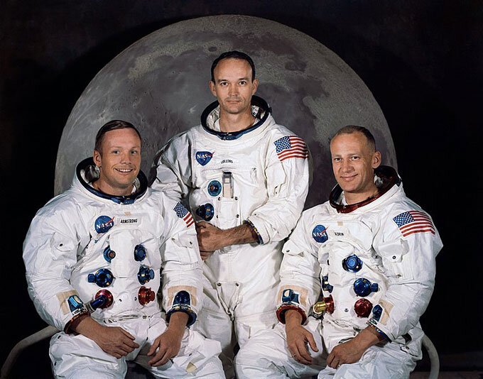

Fundação da NASA
A NASA, fundada em 29 de julho de 1958, surgiu em meio à intensa competição da corrida espacial durante a Guerra Fria, especialmente após o lançamento do satélite soviético Sputnik em 1957. Criada para coordenar os esforços dos Estados Unidos em pesquisa aeroespacial, a agência tem como missão principal a exploração do espaço, tanto para fins científicos quanto para a segurança nacional.
Desde sua fundação, a NASA tem sido pioneira em inovações tecnológicas e descobertas que expandiram nosso entendimento do universo. A criação da NASA também marcou o início de um novo capítulo na colaboração internacional em pesquisa espacial, com a participação de diversas nações em projetos significativos, como a Estação Espacial Internacional.

Dwight D. Eisenhower, o presidente que aprovou a criação da NASA.

A missão Apollo 11, que levou o homem à Lua em 1969.
Objetivos da NASA
Os principais objetivos da NASA são abrangentes e visam não apenas a exploração espacial, mas também a aplicação prática de suas descobertas para melhorar a vida na Terra. Entre esses objetivos, destacam-se:
- Exploração Espacial: Compreender o universo e realizar missões a outros planetas, como Marte, para investigar a possibilidade de vida e o potencial para a colonização humana.
- Pesquisa Científica: Estudar a Terra e outros corpos celestes, promovendo o entendimento de fenômenos naturais e climáticos, além de investigar a origem e a evolução do sistema solar.
- Desenvolvimento Tecnológico: Inovações em tecnologia aeroespacial, que têm implicações diretas em diversos setores, incluindo comunicações, medicina e segurança.
- Educação: Inspirar novas gerações em ciências e exploração, desenvolvendo programas educacionais e parcerias com instituições de ensino para estimular o interesse por STEM (ciência, tecnologia, engenharia e matemática).
- Colaboração Internacional: Trabalhar com agências de outros países, promovendo a paz e a cooperação na exploração espacial e no desenvolvimento de tecnologias que beneficiem toda a humanidade.